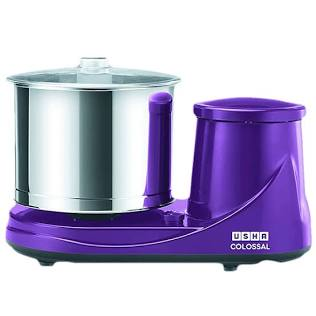

Kitchen Electronics
Commercial 2L Tilting Wet Grinder
Features heavy-duty granite grinding stones and a high-torque motor. Perfect for preparing large batches of idli, dosa, or vada batter for family functions and neighborhood gatherings.